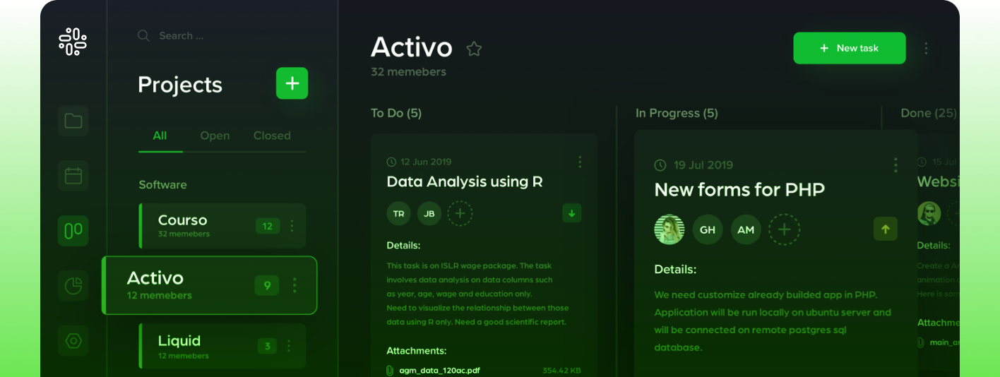

AI Cover Letter Generator
The AI Cover Letter Generator is a tool that uses artificial intelligence algorithms to create personalized cover letters for job applicants.
PostJob
Submit better job app — 10x faster. AI cover letter generator, resume keyword checker, outreach message writer, and more. Powered by GPT
The AI Cover Letter Generator is a tool that uses artificial intelligence algorithms to create personalized cover letters for job applicants.
Smart Personalization refers to the use of data and technology to deliver tailored experiences and content to individual customers or users.
A resume scanner is a software application that uses optical character recognition (OCR) technology to extract and analyze data from resumes.
10x faster
AI cover letter generator, resume keyword checker, outreach message writer, and more. Powered by GPT
We'll help you through the hardest part of your job search.
A cover letter is a document that accompanies a job application and is written to introduce the applicant to the employer.

A resignation letter is a formal document that an employee writes to inform their employer of their decision to leave the company.

A connection request is a message sent on a social networking site, such as LinkedIn, requesting to connect with another user.

Outreach emails are messages sent by individuals or businesses to introduce themselves, establish a connection, or propose a collaboration.

Smart Personalization refers to the use of data and technology to deliver tailored experiences and content to individual customers or users.

A resume scanner is a software application that uses optical character recognition (OCR) technology to extract and analyze data from resumes.
A free AI cover letter generator powered by GPT is a tool that uses artificial intelligence and natural language processing to help job seekers create customized and effective cover letters.


By optimizing keywords in your resume, you can increase your chances of getting noticed by recruiters and landing interviews for the jobs you want.
By following these design tips, you can create a professional and effective resume that will help you stand out to recruiters and hiring managers.

Submit better job app — 10x faster. AI cover letter generator, resume keyword checker, outreach message writer, and more. Powered by GPT
{kind=link}